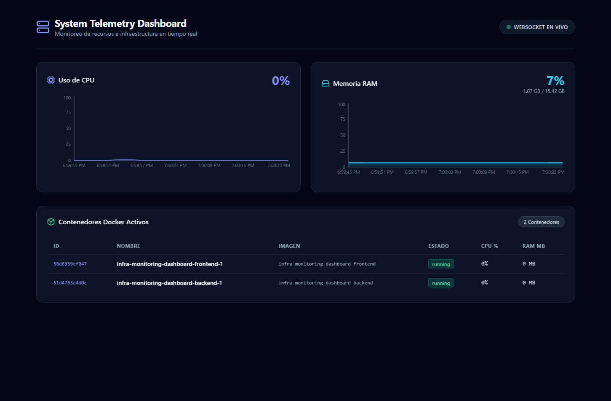
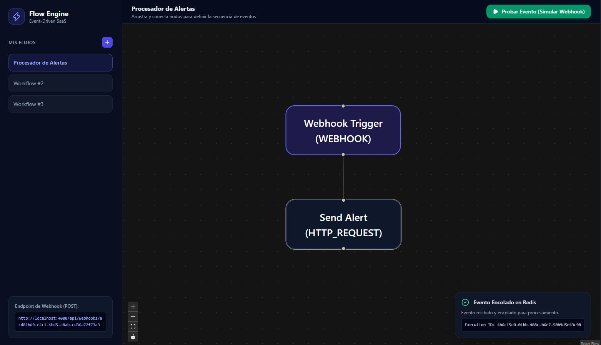
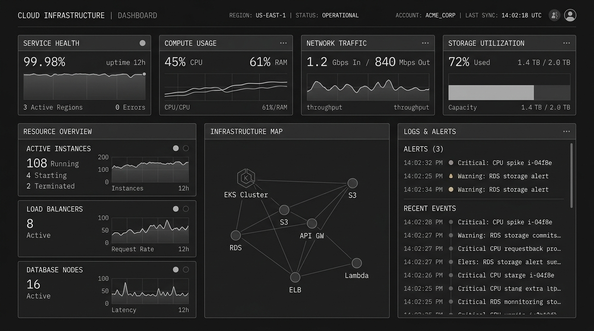

Open SourceReal-Time Infrastructure Telemetry Dashboard
Telemetría y monitoreo de infraestructura en tiempo real con WebSockets (Socket.IO). Streaming de métricas host y contenedores Docker en un dashboard responsivo.
Ingeniero de Software enfocado en arquitectura de alto rendimiento, desarrollo Full-Stack e interfaces intuitivas que combinan estética moderna con ingeniería limpia.
Iniciativas técnicas clave y soluciones de código abierto.

Open SourceTelemetría y monitoreo de infraestructura en tiempo real con WebSockets (Socket.IO). Streaming de métricas host y contenedores Docker en un dashboard responsivo.

Open SourceMotor SaaS desacoplado para automatización de flujos estilo Zapier. Procesamiento asíncrono con colas Redis/BullMQ, reintentos automáticos y tolerancia a fallos.

PróximamenteAPI y panel interactivo para resolución de problemas de optimización de rutas (VRP) y distribución eficiente de cargas sobre mapas interactivos.
Tecnologías y herramientas con las que construyo productos de software.
JavaScript (ES6+), TypeScript, React, HTML5/CSS3, Modern Web APIs.
Node.js, Python, RESTful Services, GraphQL, SQL & NoSQL Databases.
Git, Docker, CI/CD Pipelines, Cloud Infrastructure, Clean Architecture.